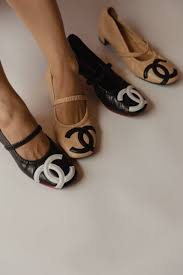

Archival Fashion Authentication Guide
How I Check and Verify Vintage Pieces
This is how I research and evaluate archival items when sourcing or buying secondhand. I start by studying runway photos, campaign imagery, and lookbooks from the same era to confirm that a design, fabric, and colorway actually existed in that season. From there, I compare small construction details such as stitching, fabric texture, label typography, and hardware engravings. I always check serial numbers, zipper brands, and interior stamps for consistency with the year and model.
I use resources from online fashion archives, resale databases, and subreddits where experienced authenticators share legit checks. When possible, I also verify listings against other confirmed authentic pieces to spot inconsistencies in shape, weight, and finish. My process is careful because archival fashion carries both creative and historical value, so accuracy matters.
Quick Checklist
- Matches an official runway or lookbook reference
- Correct label placement, font, and stitching pattern
- Serial number and hardware engravings match the era
- Authentic zipper brand and fabric composition
- Clean, even stitching and secure backstitching
- Clear, natural-light seller photos showing key details
- Cross-checked with legit checks and verified sales records
Brand Notes
- Chanel: Turnlock engraving depth, serial sticker alignment, and quilting symmetry across seams.
- Balenciaga: Tag era markers, zipper brand, and correct font for metal plaques from the early 2000s.
- Jean Paul Gaultier: Print clarity on mesh, tag font style, and placement of size labels by collection.
In addition to fashion authentication, I also have a strong interest in financial data analysis and plan to pursue a career in corporate fashion or luxury brand strategy. I hope to merge my analytical background with my passion for creative industries, using data-driven approaches to study trends, brand value, and sustainability.
In the future, I plan to build a small visual database that uses data science tools to compare label fonts, hardware engravings, and serial codes by year and model. My goal is to make archival authentication more transparent and accessible for collectors and researchers who care about fashion history.